Review · Round 6 · the chapters · the whole film
Chapter 1: 2538, the draft
The first pass with motion, 3:42 at 12 drawings a second, over the same sound as the storyboard. The history is a science plate; the city is one set, panned across from the machines at work to the people at play. The mind is the plate again, with man's loose curl and the machine's ruled line, which end walking together.
Notes: pause anywhere, type, and press Enter (or Pin) to pin a note to that moment. They stay in this browser. Copy notes puts them on the clipboard as text, timed and with their shot, for the decision sheet or a message.
Notes
The shots
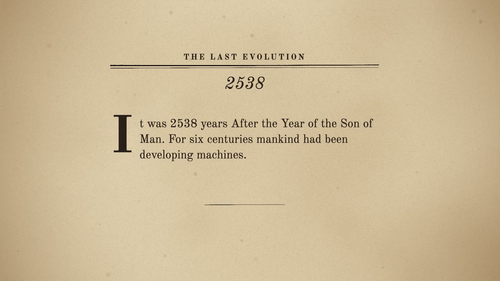
A The chapter's page 0:00–0:12
seenThe pulp page, 2538, and the opening words under a drop cap.
cameraa slow push
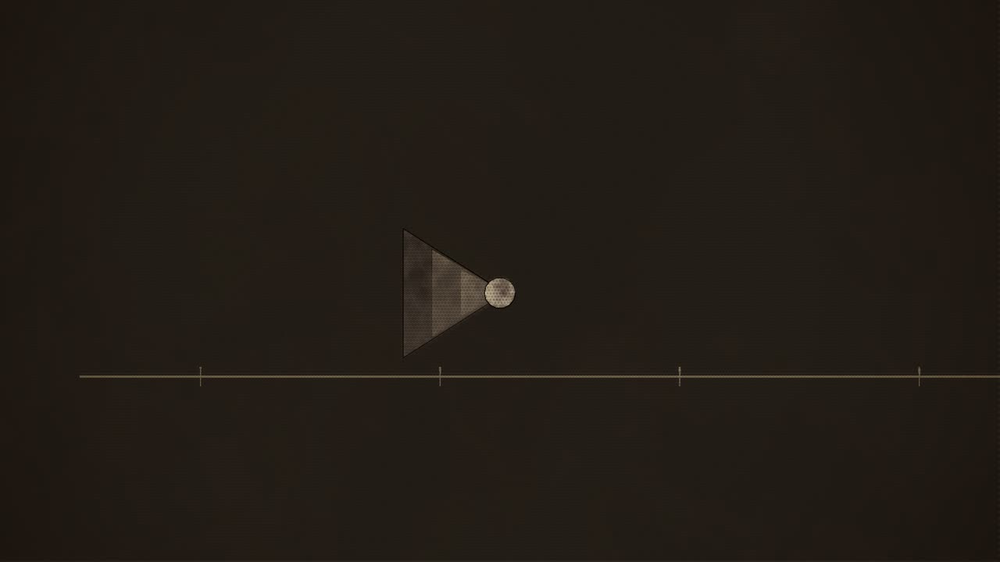
B Six centuries of machines 0:12–0:29
seenA science plate: a ruled line runs across it, the centuries. Along it the inventions appear in turn: the Ear, a receiver of nested horns; the Eye, a lens in a ringed mount; the Brain, a dome-case.
cameratracks along the line, left to right
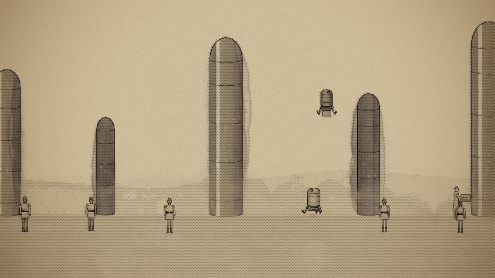
C The city of 2538 0:29–0:53
seenThe city by day: towers of the family form, domed, rising behind; machines floating at their work, carrying and building; people at ease below.
cameraa slow pan right along the city
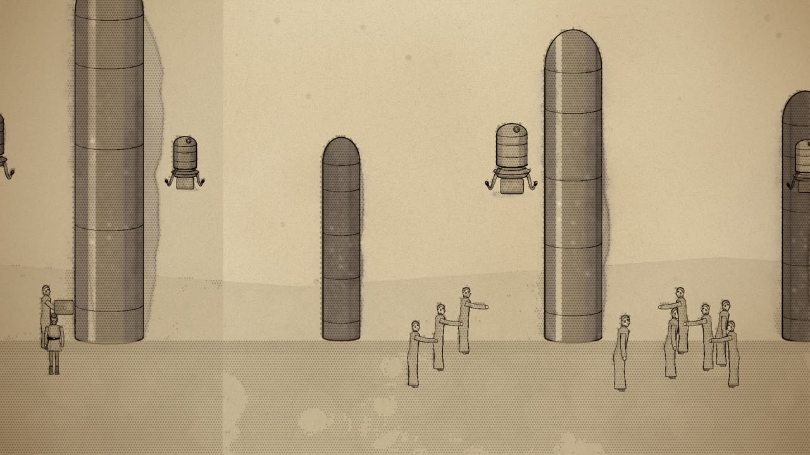
D Games 0:53–1:33
seenPeople at their games on the plaza; runners racing; two lines of men fighting a mock battle with harmless flashes.
cameracarries on right to the plaza, a little closer
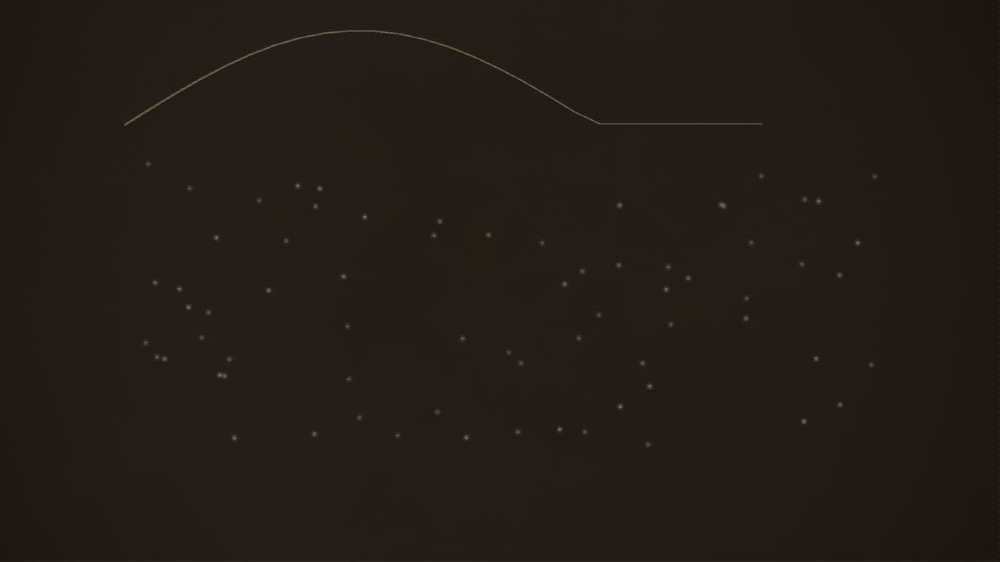
E The numbers 1:33–1:59
seenA field of small lights on the dark plate, one for every many millions; a ruled curve over them, the years.
cameraholds the field, easing in on the last few
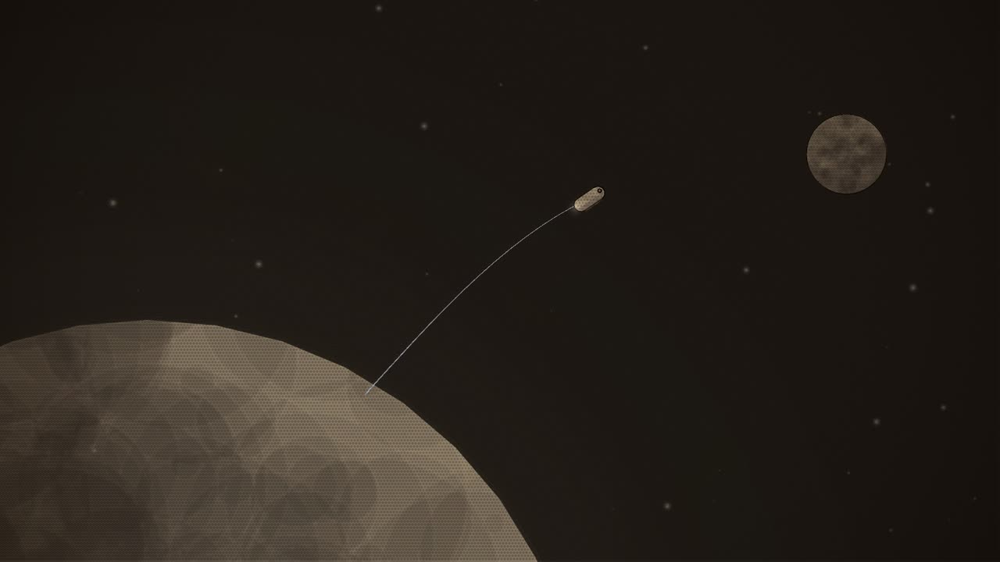
F Other worlds 1:59–2:12
seenSpace; the Earth below; a small ship of the machines rising away toward a far planet.
camerafollows the ship out
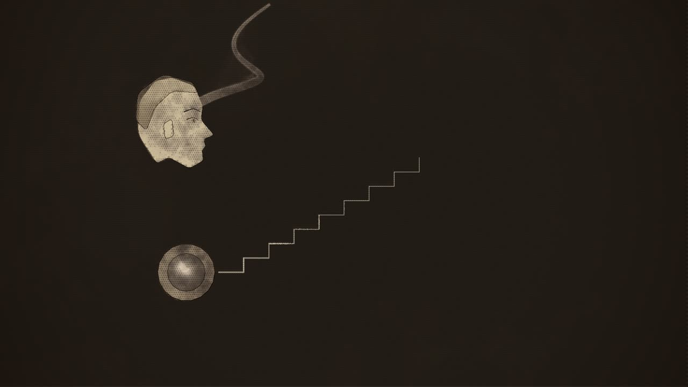
G The unseen places of the mind 2:12–2:39
seenThe plate. At the left, a man's head in profile, a loose curl of wash rising from it; at the right, a machine's lens, a ruled line from it.
camerasettles on the two
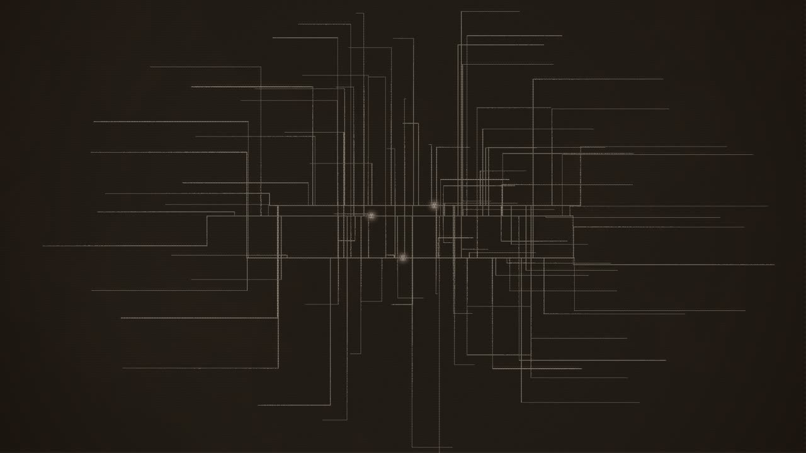
H Three facts, the Universe 2:39–2:54
seenThree points of light; ruled lines from them branch and branch into a lattice the shape of a world, then of a galaxy.
camerapulls back as it grows
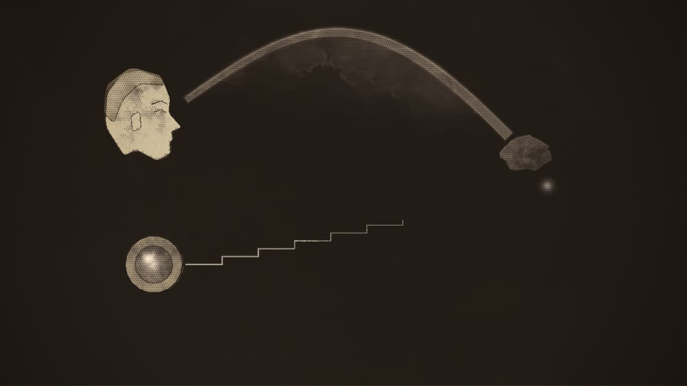
I Two imaginations 2:54–3:23
seenThe head and the lens again; far to the right, a point of light, the conclusion.
cameraholds wide enough for both paths and the point
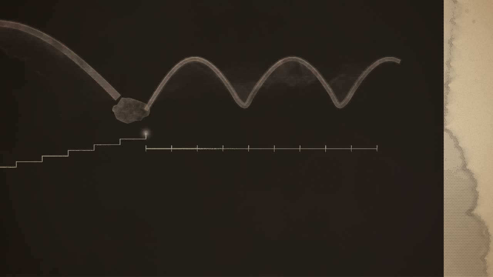
J Leaps and steps 3:23–3:32
seenThe two lines run on across the plate, the curl in long arcs, the ruled line in even steps.
cameratracks right with them
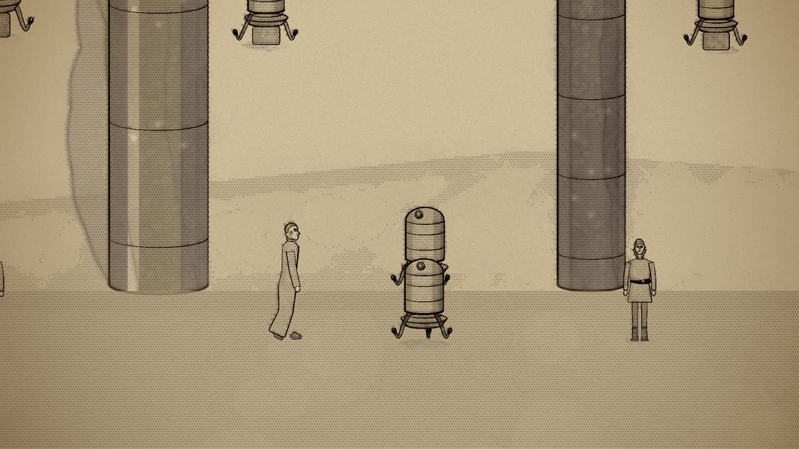
K Together 3:32–3:42
seenThe city's edge; a man and a machine walking side by side toward the towers.
cameratracks with them, then lets them go into the city